Intro
After working on my SVG rendering library (resvg) for the past 6 years, and working closely with SVG for the past 10, I've thought that this is enough time to have some interesting insight worth sharing. And there are definitely a lot to talk about.
When people think SVG, they usually imagine something like this:
<svg viewBox="0 0 200 200" xmlns="http://www.w3.org/2000/svg">
<rect x="20" y="20" width="160" height="160" fill="green"/>
</svg>
A very simple, user-friendly, XML-based vector file format.
And while SVG is indeed designed to be easy to read and write by a human, parsing and rendering of it are notoriously hard for a machine. The SVG spec is 20 years old and there are still no libraries that support even 80% of it. Yes, after 20 years one still cannot just render an SVG.
Whenever I receive bug reports for my SVG library, people often use the phrase "my SVG isn't rendering correctly". Which cracks me up every time. There is no such thing as a correctly rendered SVG. As soon as you start using "advanced" features such as text, filters, or, God forbid, animations - it would simply not work. Never. And even if you will manage to make it work, as soon as you try a different render - it will fall apart again.
The idea behind this "book" is to answer the popular question of "how hard can it be?". A reader expected to have some prior knowledge about SVG, but it should be a fun read either way.
I'm trying my best not to fall into a rant, but when it comes to SVG - it's really hard.
NOTE: English is not my native language, so this "book" will probably be hard to digest. And this is on top of the complexity of the subject itself.
NOTE: This "book" isn't finished and still work in progress.
The root of the problem
So why it's so hard to parse and render SVG?
In my opinion, the main issue is the lack of a reference implementation. No one actually knows how SVG suppose to work. By writing a reference implementation, including a test suite, a lot of issues described in this "book" would never happen.
Instead, we have Chrome. It probably supports around 80% of the spec. Which is not that great, but the best we got so far. And good luck figuring out how it works. It's a huge codebase and even finding the right source file could be challenging.
As for a test suite, SVG 1.1 actually had one. A very rudimentary, but still. And SVG 2 has some SVG-inside-HTML tests, which are impossible to use outside a browser. I have ended up writing my own test suite. It's far from being complete but already includes 1500 tests. Which should give you a hint about the monstrosity we're dealing with.
Asking the SVG Working Group is not an option either.
I have contacted them
multiple times during resvg development
and the most common answer I've got was "we don't know".
Which wouldn't be a thing if we had a reference implementation.
In the end, I genuinely believe that it's simply impossible to implement the whole SVG spec. There is just too much of it.
Maybe we should just use something else? You might ask. Like what?
The only open-ish SVG alternative is PDF. Which is a nightmare on its own,
while being conceptually simpler, since it doesn't have
a text layout, filters/effects, animations and events.
Relative units
Just like HTML/CSS, SVG supports relative units. In fact, SVG 2 supports the same units HTML/CSS does. So the logic can overlap between SVG and HTML.
And while absolute units (like mm) are pretty simple - just a multiplication factor based on the
DPI,
relative require a much more complex logic.
Percent units
While percent units may look simple, after all, % can be treated just as a factor (e.g. 200% is the same as 2x). But in reality, they are quite complicated. And mainly because of the base value they are relative to.
Let's take opacity for example: opacity="50%". What is it relative to? Technically, to itself.
Or more specifically to 1. So 50% equals 0.5 and 100% equals 1.
And values outside the 0..1 range are clamped.
What about the rectangle's width? It's relative to the parent SVG element's viewBox
(parent, not the root one, and viewBox, not width/height). So in the case of:
<svg width="100" viewBox="0 0 50 50">
<rect width="50%" height="20"/>
</svg>
our width is 25.
And it gets weirder since a use element can enforce the svg viewbox as well when no
viewBox was set. So in the case of:
<svg id="svg1" width="100">
<rect width="50%" height="20"/>
</svg>
<use xlink:href="#svg1" width="50">
our width is again 25. Because we have to use the width from the use element.
You can find more about it in the
use to svg size resolving chapter.
What about stroke-width? Well, it's relative to the diagonal length of the current viewbox.
Aka sqrt((width^2 + height^2) / 2). So in the case of:
<svg viewBox="0 0 50 25">
<rect stroke-width="50%"/>
</svg>
it will be sqrt((50^2 + 25^2) / 2) = 39.5.
What about font-size? It's relative to the parent font-size. So in the case of:
<g font-size="20">
<text font-size="50%"/>
</g>
our font size is 10.
Font units
font-size and font units (em and ex) make our lives even worse.
First, font-size can have
named values,
like larger or medium.
It can also have percent units, which are relative to the parent font-size
and not the current viewbox.
Second, font relative units have to be resolved from the root element to the current one and not the other way around, like with other relative units. So in the case of:
<svg>
<g font-size="20">
<g font-size="200%">
<g font-size="larger">
<rect width="0.5em" height="0.5ex"/>
</g>
</g>
</g>
</svg>
our width and height are 24 and 12 respectively. Why? Because of the following steps (from top to bottom):
- 20
- 20 * 200% = 40
- 40 * 1.2 = 48 (
largerhas a scaling factor of 1.2, don't ask why...) - width: 48 * 0.5 = 24
- height: (48 * 0.5) / 2 = 12
rx/ry attributes resolving
In SVG, rectangle corners can be rounded by setting rx and ry attributes. Like this:
<rect x="5" y="5" width="10" height="10" rx="2" ry="2"/>
duplicated radiuses. So instead of rx="2" ry="2" you can write just rx="2" or ry="2".
And the "missing" value will be copied from the present one. Pretty nice.
Of course, it wouldn't be in this "book" if it was that easy.
Remember that SVG supports relative units,
like mm, em and %, which you have to convert into absolute before rendering?
The question is, what should be done first: resolving the missing attribute
or relative to absolute unit conversion? The spec doesn't say.
But who cares! It couldn't be that bad, right? Well... Let's take a look at this example:
<svg viewBox="0 0 20 50">
<rect width="10" height="10" rx="50%"/>
</svg>
To what values rx and ry should be resolved?
If we copy the missing radius first, then we will get rx="50%" ry="50%"
and therefore rx="10" ry="25" (via svg.viewBox.width * 50% and svg.viewBox.height * 50%).
Otherwise it will be rx="10" ry="10".
The answer is the latter. A parser is suppose to convert units first and only then copy the present value.
Neat! But surely no one actually made such mistake, right?
Well, Batik 1.16, a 20 years old library, still has this bug.
My resvg library had this bug for 5 years until I accidentally stumbled onto it while fixing
an unrelated issue.
A tiny bug that is almost impossible to hit, but that's what you get when you have a file format with countless interconnected features and no test suite.
Since SVG 2, this logic affects ellipse as well.
Length parsing
The length type is essentially
a number + unit pair. Like 10mm or 5%. Nothing too crazy.
From the parsing perspective it doesn't look that hard either.
Most languages have something like a string_to_number function,
which in most cases would return the position of the last parsed digit,
making the unit suffix parsing trivial.
The problem is that we cannot use those functions in SVG. And CSS in general.
Why? Because of font units, aka em and ex.
Remember that SVG/CSS allows exponent notion in numbers.
Meaning that 1e5 is a perfectly valid number.
Now, if we try to parse 5em, there is a great chance that our language-provided
function would fail, because this is not the correct exponent notation,
but still a valid SVG length. Same with 1e5em.
Because of this, most SVG parsers had to implement a custom numbers parsing.
And usually it's enough to simply have a function that would properly split
length into number (string representation) and suffix. And we can then pass
the separated number to the string_to_number function of choice.
Attributes inheritance
SVG is all about simplifying the life of an author who writes SVG by hand. One of such features is attributes inheritance.
Instead of writing:
<rect fill="green"/>
<rect fill="green"/>
we can write
<g fill="green">
<rect/>
<rect/>
</g>
and both rectangles will inherit the fill attribute value.
As expected, this simple idea leads to death by a thousand cuts.
First, not all properties/attributes are inheritable.
For example, fill-opacity is inheritable, but opacity isn't.
You can find the whole list here
(see the Inh. column).
Second, for some reason, inheritance can be stated explicitly, like this:
<g fill="green">
<rect fill="inherit"/>
<rect/>
</g>
This would produce the same output as before, but makes parsing harder.
Third, some non-inheritable properties can be inherited explicitly
via the inherit keyword, but only from the direct parent element.
For example:
<g opacity="0.5">
<rect/> <!-- opacity=1 -->
<rect opacity='inherit'/> <!-- opacity=0.5, effectively 0.25 -->
<g> <!-- opacity=1 -->
<rect opacity='inherit'/> <!-- opacity=1, effectively 0.5 -->
</g>
<g opacity='inherit'> <!-- opacity=0.5, effectively 0.25 -->
<rect opacity='inherit'/> <!-- opacity=0.5, effectively 0.125 -->
</g>
</g>
Fourth, when the inherit keyword is used, but no parent element had defined this property,
the default value should be used.
All of this can lead to some bizarre and unexpected cases like:
<g stop-color="red">
<linearGradient id="lg1" stop-color="green">
<stop offset="0"/>
<stop offset="1" stop-color="inherit"/>
</linearGradient>
</g>
Here, the first stop would be black (default value, because stop-color is non-inheritable)
and the second stop would be green (explicitly inherited from the parent).
And the stop-color on g has no effect, because it's non-inheritable.
Path data
SVG path data,
aka the d attribute in the path element, deserves its own book. This is how complicated it is.
Sure, in most cases you will see something like M 100 100 L 200 200 and it doesn't look
that bad. But M10-20A5.5.3-4 110-.1 is a perfectly valid SVG path as well.
How is it possible? Let's find out!
Basics
While the SVG path data section of the spec details everything nicely, here are some basic terminology:
- command - upper or lower case M, L, H, V, C, S, Q, T, A and Z character
- coordinate - a number, usually a pair
- segment - a pair of a (potentially implicit) command and coordinates
- subpath - a list of segments starting from MoveTo and ending with ClosePath, a new MoveTo or the end of the data
- path - a list of subpaths
Parsing steps
Path data parsing can be split into two steps: parsing/tokenization of the original segments (absolute, relative, implicit, shorthands) and simplification of them to leave only the basic segments (move, line, curve, close) in absolute coordinates.
The simplification step is important, since SVG path data notation is far more complex then a typical 2D library API would allow. That's what this chapter about.
Implicit sequential commands
If a path has multiple sequential segments of the same type, like:
M 10 20 H 10 H 20 H 30 V 40
SVG allows us to specify the command only the first time, like:
M 10 20 H 10 20 30 V 40
Implicit sequential MoveTo commands
If we take the idea above and apply it to MoveTo (M) segments it will not produce
the output you would expect.
In SVG, the following path will produce nothing since a single subpath must have at least two segments. And here we have two subpaths with a single segment. And no, this is not two zero-length subpaths.
M 10 20 M 30 40
But the following path will produce a line. Why?! Because an implicit command after MoveTo is treated as LineTo and not MoveTo. Yeah...
M 10 20 30 40
Is the same as:
M 10 20 L 30 40
And we're not done yet. The implicit LineTo command is affected by MoveTo's absolute/relative state. Meaning that:
m 10 20 30 40
is
m 10 20 l 30 40
and not
m 10 20 L 30 40
Implicit MoveTo segment after ClosePath
And we're not done with MoveTo yet. If you read the spec extremely carefully, you will notice the following line:
If a "closepath" is followed immediately by any other command, then the next subpath starts at the same initial point as the current subpath.
Which means that:
M 10 20 L 30 40 Z L 50 60
is identical to:
M 10 20 L 30 40 Z M 10 20 L 50 60
and it's not an error.
What is interesting is that path data must start with a MoveTo segment. Meaning that the following path is invalid:
L 30 40
and must not be treated as
M 0 0 L 30 40
or something like that.
And surprise-surprise, some libraries do that. Specifically Batik and QtSvg.
Relative MoveTo segment after ClosePath
A relative MoveTo segment after ClosePath is relative to the previous MoveTo segment since ClosePath moved the current coordinate to it.
It might not look like that big of a problem, but depending of how you're parsing the path data you might use the previous MoveTo coordinate directly, which is incorrect. The previous absolute MoveTo coordinate must be used.
Meaning that in the case of:
M 10 20 L 30 40
m 50 60 L 70 80 Z
m 90 100 L 110 120
the second MoveTo is relative to the current position, i.e. 30,40 + 50,60. And the third MoveTo is relative to the absolute second MoveTo, i.e. 30,40 + 50,60 + 90,100
ArcTo flags
The ArcTo segment has a pretty straight-forward syntax:
rx ry x-axis-rotation large-arc-flag sweep-flag x y
But if you read the EBNF grammar very carefully you will notice that
large-arc-flag and sweep-flag do not require a space after them.
elliptical_arc_argument::=
number comma_wsp? number comma_wsp? number comma_wsp
flag comma_wsp? flag comma_wsp? coordinate_pair
flag::=("0"|"1")
After all, they can be set to either 0 or 1, so we already know their length. Therefore:
A 5 5 30 1 1 10 20
is identical to:
A 5 5 30 1110 20
Until recently, QtSvg did not supported it. And Batik would even crash in some cases.
Curve shorthands
Quadratic and cubic curve segments allow a shorthand variant, in which case one of the coordinates can be skipped if it can be resolved from the previous segment.
In the case of CurveTo shorthand (S):
The first control point is assumed to be the reflection of the second control point on the previous command relative to the current point.
Which basically means:
x1 = prev_x * 2 - prev_x2
y1 = prev_y * 2 - prev_y2
This way
M 10 20 C 30 40 50 60 70 80 S 90 100 110 120
becomes:
M 10 20 C 30 40 50 60 70 80 C 90 100 90 100 110 120
because:
70 * 2 - 50 = 90
80 * 2 - 60 = 100
And a subcase of this is:
If there is no previous command or if the previous command was not an C, c, S or s, assume the first control point is coincident with the current point.
This way
M 10 20 S 30 40 50 60
becomes
M 10 20 C 10 20 30 40 50 60
QuadraticTo shorthands work similarly to CurveTo shorthands, but instead of reflecting the x2/y2, they reflect x1/y1 one.
Note that during the simplification stage, the "previous segment" refers to the last simplified one and not the previous one in the original path data. Otherwise, when we have a mix of different curve shorthands we would get invalid results.
Which is what Batik does in the case of:
M 30 30 T 40 170 S 170 170 170 30
which should be resolved to:
M 30 30 Q 30 30 40 170 C 40 170 170 170 170 30
while Batik produces this:
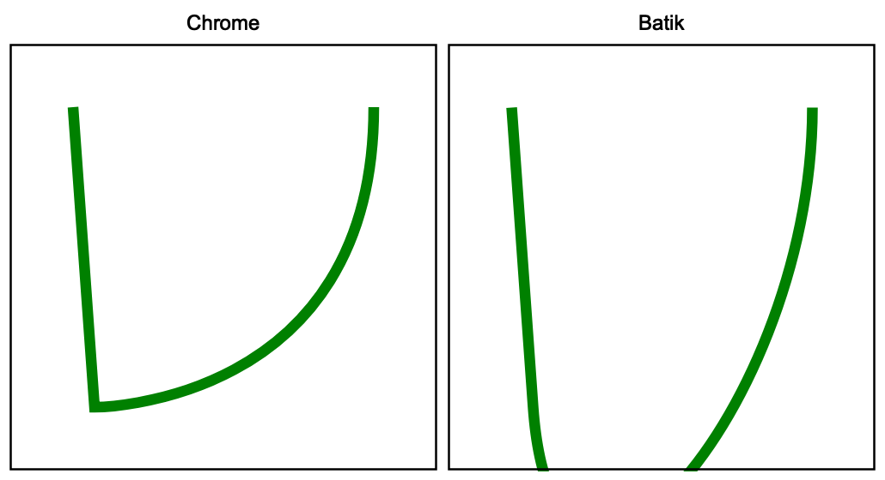
This is a good illustration that even the most basic features, like path data, cannot be used in a reproducible way. Inevitably there will be a library or an app that would fail due to complexity.
Trailing data
During parsing, any malformed data should simply end parsing of the current path data.
So in case of something like M 10 20 L 30 40 abcdef a proper parser should
return M 10 20 L 30 40 and maybe print a warning. A parser should not ignore the already parsed
data. It should not skip elements with malformed path data.
Neither it should abort parsing of the whole document.
This may sound like an obvious behavior, but Batik 1.16 will abort the file parsing completely and throw an error. And Inkscape 1.2 will ignore the whole path.
Duplicated ClosePath segments
To close a subpath, SVG uses the ClosePath (Z) segment.
Stroking of:
M 0 50 L 50 0 L 100 50
will produce two lines. But
M 0 50 L 50 0 L 100 50 Z
will produce a triangle.
And no one stops you from having as many repeated ClosePath segment as you want. But only one must remain. So:
M 0 50 L 50 0 L 100 50 Z Z Z Z Z Z
should simplifying just to:
M 0 50 L 50 0 L 100 50 Z
By the spec, consecutive ClosePaths are no-op. Meaning Z Z Z Z is the same as Z.
The important part here is that removal of duplicated ClosePaths should be done before
markers resolving. The marker-mid property should be applied to each segment.
And if you still have multiple ClosePaths you may end up with something like this:
| Correct | Incorrect |
|---|---|
| 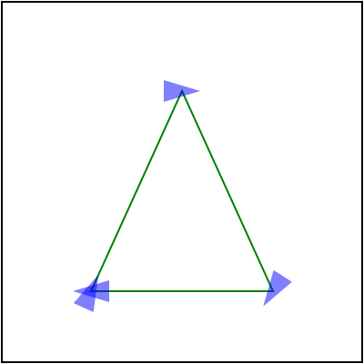 | 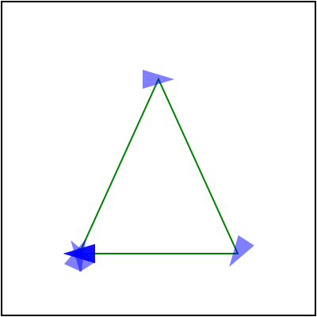 |
And while markers in general are poorly supported, this case trips even browsers:
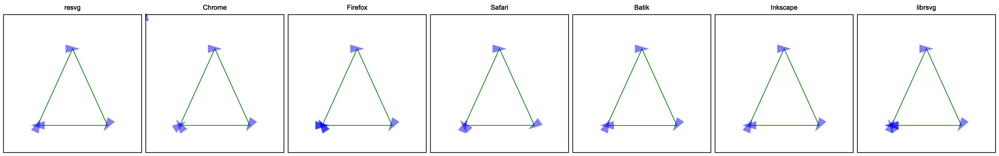
Here, only resvg, Batik and Inkscape are correct.
ArcTo to CurveTos
Most 2D libraries do not provide an API to append SVG Arcs to a path.
Some 2D libraries do have arc_to methods, but SVG arcs are a bit special.
Therefore most SVG parsers would convert Arcs to Curves themselves.
And since it's on this list - you know it's bad. In fact, it's a surprisingly hard task. And of course, the SVG spec doesn't define it in any way.
To make things worse, there are multiple ways you can do this and each of them would take 200-300 lines of code.
Markers on ArcTo
Continuing the previous section, ArcTo to CurvesTo conversion hides another issue.
Usually, a single ArcTo would be converted into multiple CurveTos. Getting just one is pretty rare.
Which means the number of segments in our path has changed.
Why does it matter? Because of marker-mid.
marker-mid attribute allows us to draw a marker at each segment end
(yes, confusing, I know, but this is what mid means in this context.
marker-end means the end of the path, not a segment).
And if the number of segments has changed, we could get something like this:
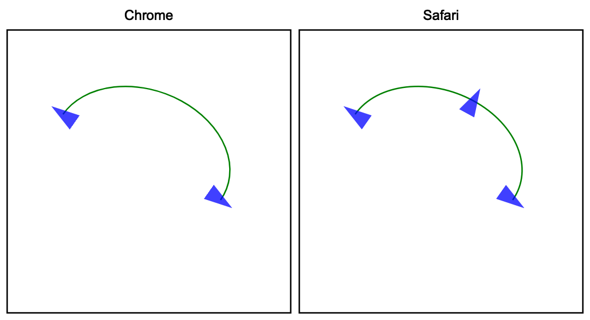
resvg and Safari would fail to render this correctly. I personally still have no idea how to preserve the original segment ends. Since it would require to resolve markers before paths simplification. Which doesn't make any sense.
Isolated groups
Most people are familiar with the concept of layers from image editing applications
like Photoshop. Where each shape, image and text are represented as individual layers
and each of those layers can be arbitrarily grouped.
It's a pretty simple and intuitive idea. We essentially have a stack of images
that are blended together to produce the final image.
And while SVG's XML structure may look like a tree of layers - it's not.
Not only we do not render each SVG element into a dedicated image/layer -
unless you have a powerful GPU and infinite RAM -
we do not have layers to begin with.
When rendering SVG, we simply render each element directly to the main canvas
without creating individual images/layers. Except for isolated groups.
What is an isolated group? This is a very good and a very complicated question.
And first we have to understand what is an SVG group.
An SVG group, aka the <g/> element, is technically just a syntax sugar.
It allows us to visually group elements and/or propagate common properties.
Meaning that:
<g fill="green">
<rect/>
<rect/>
</g>
is semantically identical to:
<rect fill="green"/>
<rect fill="green"/>
And for our renderer such a group is no-op. We could skip it and simply render its children.
On the other hand, clipping, masking, filters and opacity can be set only on groups.
Yes, the ability to set the opacity attribute on other elements is just a syntax sugar.
Meaning that:
<rect opacity="0.5"/>
is technically:
<g opacity="0.5">
<rect/>
</g>
And this time our renderer would create a temporary image, will draw a rectangle on it and then blend that image to the main canvas.
A group that requires an image allocation is called isolated.
It can be defined indirectly, by setting non-default
clip-path, mask, filter and/or opacity attributes.
Or directly, since SVG 2, by setting style="isolation:isolate".
How bad can it be? Let's try to render a group with three circles and opacity:
<g opacity="0.5">
<circle id="circle1" cx="100" cy="70" r="50" fill="#f00"/>
<circle id="circle2" cx="70" cy="110" r="50" fill="#0f0"/>
<circle id="circle3" cx="130" cy="110" r="50" fill="#00f"/>
</g>
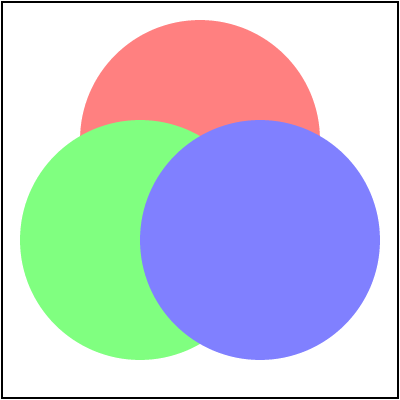
If we ignore the group isolation and simply apply opacity to each circle we would get:
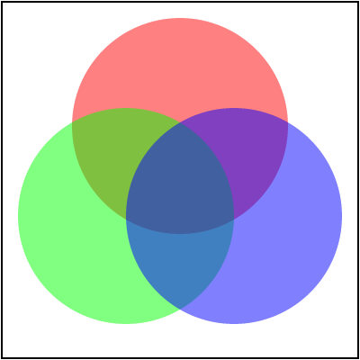
Funnily enough, this is exactly what QtSvg does. It doesn't support isolation. Probably for performance reasons.
You can find more details in the spec.
Gradients resolving
A typical gradient in SVG looks like this:
<linearGradient id="lg1">
<stop offset="0" stop-color="white"/>
<stop offset="1" stop-color="black"/>
</linearGradient>
But SVG allows one gradient to reference another via the href attribute.
When used, gradient's missing stop elements and attributes will be copied from a referenced gradient.
Most libraries are either bad at this or do not support this at all.
Stops resolving
A gradient can reference stop elements from another gradient. The type of a gradient doesn't matter, meaning linear can reference radial and vise versa. Stops will be referenced only when the current gradient doesn't have any stops. Meaning that
<linearGradient id="lg1">
<stop offset="0" stop-color="white"/>
<stop offset="1" stop-color="black"/>
</linearGradient>
<linearGradient id="lg2" xlink:href="#lg1"/>
is identical to
<linearGradient id="lg1">
<stop offset="0" stop-color="white"/>
<stop offset="1" stop-color="black"/>
</linearGradient>
<linearGradient id="lg2">
<stop offset="0" stop-color="white"/>
<stop offset="1" stop-color="black"/>
</linearGradient>
The href chain length is unlimited. A gradient can reference another
gradient which references another one and so on until one of the gradients in a chain
has non-zero stops.
Like so:
<linearGradient id="lg1">
<stop offset="0" stop-color="red"/>
<stop offset="1" stop-color="green"/>
</linearGradient>
<!-- lg1 stops are ignored, because lg2 already has stops -->
<linearGradient id="lg2" xlink:href="#lg1">
<stop offset="0" stop-color="white"/>
<stop offset="1" stop-color="black"/>
</linearGradient>
<linearGradient id="lg3" xlink:href="#lg2"/> <!-- stops from lg2 and not lg1 will be used -->
<linearGradient id="lg4" xlink:href="#lg3"/> <!-- stops from lg2 via lg3 will be used -->
Attributes resolving
Similar rules apply to gradient attributes as well.
If a gradient has a href link to another gradient and the referenced gradient
has attributes not present in the current gradient - those attributes will be copied.
But things are getting weird pretty fast. Some attributes can be copied only from
a gradient of the same type. Specifically x1, y1, x2 and y2 linear gradient attributes
can be copied only from other linear gradients. Even when one of gradients in the href
chain is radial. And cx, cy, fx, fy and r radial gradient attributes
can be copied only from other radial gradients.
But gradientUnits, spreadMethod and gradientTransform attributes
can be copied from a gradient of any type.
In this example, lg1 will copy spreadMethod from rg1, but will ignore y2.
<radialGradient id="rg1" y2="1" spreadMethod="reflect"/>
<linearGradient id="lg1" xlink:href="#rg1" x2="0.7">
<stop offset="0" stop-color="white"/>
<stop offset="1" stop-color="black"/>
</linearGradient>
By extrapolating a bit, we can easily end up with something like this:
<radialGradient id="rg1" xlink:href="#rg2" cx="0.5"/>
<radialGradient id="rg2" xlink:href="#rg3" spreadMethod="reflect" fy="0.65"/>
<radialGradient id="rg3" cy="0.55"/>
<radialGradient id="rg4" xlink:href="#rg1" r="0.5" fx="0.6"/>
<rect fill="url(#rg4)"/>
which is identical to:
<radialGradient id="rg4" cx="0.5" cy="0.55" fx="0.6" fy="0.65" r="0.5" spreadMethod="reflect"/>
<rect fill="url(#rg4)"/>
Radial gradient attributes resolving
Radial gradients increase the complexity even more by requiring a specific order in which attributes
must be resolved.
Specifically, fx and fy attributes, when not set, are equal to cx and cy.
But only when a referenced gradient doesn't set fx and fy either.
So in the case of:
<radialGradient id="rg1" cy="0.7" fx="0.8"/>
<radialGradient id="rg2" xlink:href="#rg1" cx="0.4" r="0.1"/>
fx will be resolved to 0.8 and not 0.4, because it's present in a referenced element.
And fy will be resolved to 0.7 and not 0.5, which is the default cx/cy value.
Basically, rg2 first becomes:
<radialGradient id="rg2" cx="0.4" cy="0.7" fx="0.8" r="0.1"/>
And only then we resolve missing fx/fy attributes and end up with:
<radialGradient id="rg2" cx="0.4" cy="0.7" fx="0.8" fy="0.7" r="0.1"/>
Note that stops and attributes resolving are independent.
Patterns and filters
Patterns have a similar logic for resolving its attributes and children. And filter has a similar logic for resolving its attributes, but not children.
Recursive references
SVG provides two types of references: IRI and FuncIRI.
IRI is defined via xlink:href="#id" and used by use elements,
gradients, patterns and filters.
FuncIRI is defined via url(#id) and used by fill, stroke, clip-path, mask, filter
and many more attributes.
The main downside of any kind of references/linking system is recursive references. And while most SVG quirks would at worse lead to an incorrect rendering, this one can easily crash your application. And often does.
And the wast complexity of SVG only makes it worse. Not only there are many ways a recursive reference can be triggered, but some cases are also hard to detect. Below are some examples.
Self-recursive:
<use id="use1" xlink:href="#use1"/>
Simple recursive:
<use id="use1" xlink:href="#use2"/>
<use id="use2" xlink:href="#use1"/>
Indirect recursive:
<g id="g1">
<use xlink:href="#use2"/>
</g>
<use id="use2" xlink:href="#g1"/>
<!-- this one affects masks and patterns as well -->
<clipPath id="clip1">
<rect clip-path="url(#clip2)"/>
</clipPath>
<clipPath id="clip2">
<rect clip-path="url(#clip1)"/>
</clipPath>
Remember that XML entities can also be recursive (see billion laughs attack). But it's technically an XML parser problem and not SVG one.
Renderable empty groups
An SVG group is a container element. It can be used to reference multiple elements at once
via the use element, as long as the group has the id attribute.
It can be used to propagate common properties to its children.
Or it can be used to visually group a list of elements.
A typical group would look something like this:
<g fill="green">
<rect/>
<rect/>
</g>
Here we have two rectangles that would be filled with a green color.
After reading this explanation you might think that a group
without any children is useless. After all, if there are
no children - there is nothing to render. So such a group can simply be skipped.
Well, there is no such thing as simple in SVG.
First, we have to remember that SVG supports filters. For example, a drop shadow.
And filters can be applied to groups as well.
By default, a filter's rendering region is 10% bigger than the element's bounding box it is applied to.
And in the case of an empty group, the bounding box is also "empty", so there is nothing
we can apply the filter to.
But a filter can define its own region in absolute coordinates, in which case
the element's bounding box should be ignored. Yes, even when it's actually zero.
What it all means is that we can easily write something like:
<filter id="filter1" filterUnits="userSpaceOnUse" x="20" y="20" width="160" height="160">
<feFlood flood-color="green"/>
</filter>
<g filter="url(#filter1)"/>
and it would be rendered as:
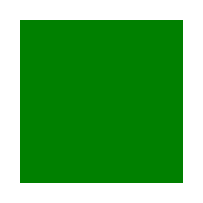
A group color
And we're not done yet. Let's say we have a group like this:
<g fill="green">
<rect fill="blue"/>
</g>
The fill property on the group seems to be useless.
After all, the child rectangle would overwrite it anyway. Right?
Well, there is actually a case when this fill property is relevant.
And it has to do with filters again.
By default, a filter uses the current element's content as a source image.
But it can be overwritten using not one, not two,
but seven inputs.
And two of them are FillPaint and StrokePaint.
So in the case of:
<filter id="filter1" filterUnits="userSpaceOnUse" x="20" y="20" width="160" height="160">
<!-- zero-blur acts as fill background here -->
<feGaussianBlur stdDeviation="0" in="FillPaint"/>
</filter>
<g filter="url(#filter1)" fill="green"/>
Our blur's input bitmap will be filled with FillPaint, which is the current fill value
of the element the filter attribute was set onto.
So in this case, not only the group itself isn't useless, but also the fill property.
And yes, you can use a gradient or a pattern input as well. The only problem is that this case is completely undocumented and each SVG library does whatever it wants.
Just look how this file would be rendered. It's comically bad.
{kind=link}
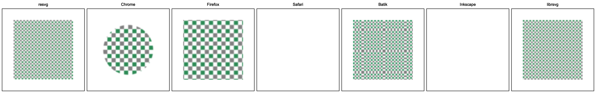
Zero-length paths
Let's say we have a path M 50 50 L 50 50. Its bounding box and length are both zero.
Can it still be rendered? Sort of.
We cannot fill it, because there is no shape to be filled. And we cannot stroke it, because the length is zero. But SVG has a special case for this.
If a zero-length path has a stroke with stroke-linecap set to round or square,
then we have to replace it with a circle or a rectangle with a size equal to stroke-width
and a center at the path's start.
This means that:
<path stroke="green" stroke-width="50" stroke-linecap="round" d="M 50 50 L 50 50"/>
would be rendered as a circle with a radius 25 at 50,50
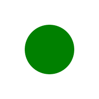
and
<path stroke="green" stroke-width="50" stroke-linecap="square" d="M 50 50 L 50 50"/>
would be rendered as a 50x50 rectangle at 25,25
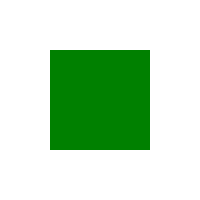
Note that M 10 20 is a malformed path not a zero-length one, while M 10 20 Z is zero-length.
And while some 2D graphics libraries do support this out of the box, some not. Which means that an SVG rendering library should check each path for zero-length subpaths beforehand and replace them with circles and rectangles accordingly.
As of Feb 2023, QtSvg doesn't support this case at all. Inkscape supports only the round case.
And qlmanage (previews generator) on macOS renders square one incorrectly (while Safari is fine).
Filter transform
As with almost every element in SVG, filters can also be transformed. The problem with filters in particular is that transforming them is actually pretty hard.
For one, this is not documented at all. Which is not that uncommon in SVG.
But also, filters are rendered in a specific way. Unlike most elements in SVG,
filters require a bitmap source as an input. So we have to render our element
onto a new bitmap (its region calculation is a yet another topic),
apply a filter to it, and then render the bitmap back onto our canvas.
And figuring out the right place to apply the transform can be challenging.
I know it sounds ridiculous. After all, affine transformations
are the most basic SVG feature. How can one mess it up?
Well, let the following examples speak for themselves.
How about a rotated rectangle with a feGaussianBlur
<filter id="filter1">
<feGaussianBlur stdDeviation="12 0"/>
</filter>
<rect x="80" y="10" width="80" height="80" fill="seagreen" filter="url(#filter1)"
transform="rotate(45 60 60)"/>
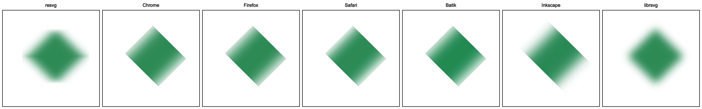
or a simple feFlood
<filter id="filter1" primitiveUnits="objectBoundingBox" height="0.5">
<feFlood flood-color="seagreen" width="0.5"/>
</filter>
<rect x="20" y="20" width="80" height="80" filter="url(#filter1)"
transform="skewX(30) rotate(-30) translate(-80 40) scale(2)"/>
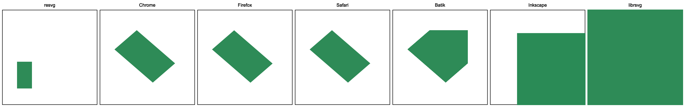
or an even simpler feOffset
<filter id="filter1">
<feOffset dx="20" dy="40"/>
</filter>
<rect x="20" y="20" width="100" height="100" fill="seagreen"
filter="url(#filter1)" transform="skewX(30) translate(-50)"/>
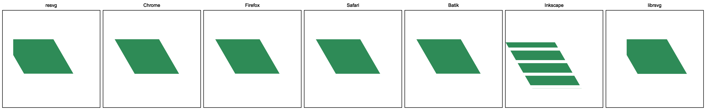
and what about feTile
<filter id="filter1">
<feFlood flood-color="seagreen" x="28" y="28" width="10" height="10"/>
<feOffset dx="5" dy="5"/>
<feTile/>
</filter>
<rect x="40" y="30" width="90" height="75"
filter="url(#filter1)" transform="skewX(30) rotate(30)"/>
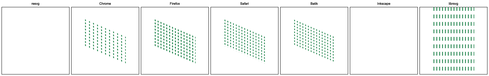
And the final piece! The absolute state of SVG - feDiffuseLighting + feSpotLight
<radialGradient id="rg1" r="0.5">
<stop offset="0.5" stop-color="white"/>
<stop offset="1" stop-color="black" stop-opacity="0"/>
</radialGradient>
<filter id="filter1" color-interpolation-filters="sRGB">
<feDiffuseLighting>
<feSpotLight x="140" y="150" z="40" limitingConeAngle="20"/>
</feDiffuseLighting>
</filter>
<rect x="30" y="20" width="100" height="100"
fill="url(#rg1)" filter="url(#filter1)" transform="skewX(30) rotate(30)"/>
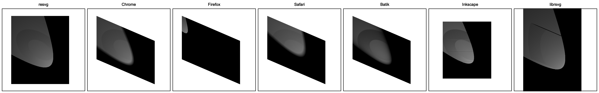
Every single application renders it differently! It's absurd!
All the results above were done on the latest versions of the mentioned libraries and applications on Feb 2023.
Automatic document size
A document size is optional in SVG. Meaning you can skip width, height
and viewBox attributes on the root svg element.
<svg xmlns="http://www.w3.org/2000/svg">
<rect width="100" height="100" fill="green"/>
</svg>
The SVG above is perfectly valid. Its size would be resolved to 100x100.
And while the SVG spec does define the bounding box calculation algorithm, it seems like no one follows it. Every implementation I've tried uses just the object bounding box, which is not what a user would expect.
First, what about stroking? If our rectangle above had a very thick stroke, should it be included in the bounding box? According to the spec - yes. In reality - no one does.
What about the filter region? Also not. Your drop shadow would be cut.
What about an image that is actually an SVG as well? Does it mean we have to parse it as well? What if that SVG doesn't have size either?
What if our image is just an URL and we have to download it first?
And what about text? Not only its bounding box is not what you might expect
(see the Text bounding box chapter).
But to get it in the first place we have to perform
the SVG Text layout algorithm. Which includes system fonts loading,
shaping and text layout (like text-on-path).
Not something you would want to do during parsing.
Meaning that one would have to perform text layout before resolving
the document size, which is far from ideal.
In the end, we have a rarely used, barely documented feature that even when implemented "correctly" would produce unexpected results.
Stroke paint fallback
Let's say we want to stroke a shape with a gradient or a pattern.
To do so we should use a familiar construct like stroke="url(#gradient)".
Pretty easy!
But remember that our gradient or pattern can have objectBoundingBox units.
In which case their size is relative to the shape's bounding box.
And what if our shape has zero width or height? This is not an error.
After all, a horizontal line has no height and a vertical line has no width.
But out gradient's or pattern's bounding box will be zero then. Not good.
The SVG spec thought about that by making everything more complicated than it should be.
An obvious solution would be to simply skip such shapes.
Which is indeed the default behavior.
Instead, SVG provides an additional syntax stroke="<FuncIRI> <color>" just for this case.
Meaning we can write stroke="url(#gradient) green" and when a shape has zero
width or height, it will be stroked using the green color and not simply ignored.
When it can be useful? No idea.
And as expected, this trips some libraries. Mainly Inkscape and QtSvg.
Note that this feature affects only stroking, since zero width/height fill will always produce nothing.
Presentation attributes in SVG 2
SVG has a concept of presentation attributes.
Essentially, those are style properties, like fill, that can be set via
CSS, a style attribute and as a regular XML attribute.
Meaning that all of the following examples are functionally identical:
<style>
#rect1 { fill:green }
</style>
<rect id="rect1"/>
<rect style="fill:green"/>
<rect fill="green"/>
SVG 2 changed this behavior and all new presentation attributes are no longer allowed to be used
as regular XML attributes. So you can write style="mix-blend-mode:screen",
but not mix-blend-mode="screen".
I have no idea why it was done, but it's a really annoying change.
All SVG 2 presentation attributes had to be skipped during XML attributes parsing now.
And an SVG writing library is essentially forced to use style everywhere,
which makes a resulting SVG harder to read and parse.
SVG Text is probably the single most complex part of the SVG.
SVG Text supports all languages; horizontal, vertical and text-on-path layouts;
right-to-left layout; filling, stroking, masking and filtering;
characters rotation; manual character positioning; automatic font matching; font fallback;
text alignment; text decorations and many many more.
An SVG library simply must implement its own text layout.
Some people might be surprised by this. After all, any decent 2D rendering library already includes
text rendering API. What else would you need?
And the problem is that most libraries can only draw a horizontal layout,
hide some internal metadata or do not allow any kind of post-processing.
Which is not nearly enough for proper SVG Text support.
I genuinely do believe that it's simply impossible to implement SVG Text. After all - no one did.
A character
This should be an easy one, right? A string of text consists of characters. Everyone knows that!
I think that from a user perspective, a character is something you can iterate on. Press left on a keyboard and a cursor moves by one character. Sounds easy. Let's begin!
– Does A a character?
– Sure!
– Does Á a charter?
– Sure is!
– Does fi a character?
– Nope! It's two characters.
– Wrong! It's a ligature
and therefore a single character (can depend on a font).
– Does => a character?
– No?
– It can be! Depending on a font.
– Does 😃 a character?
– Sure.
– Does क्षि a character?
– Hm...
– It is!
– Does द्ध्र्य a character?
– Again?!
– Yes! And it is.
– Does ȧ̶̻̫̍̽̔ a character?
– Wut?!
– It is! And it's called Zalgo.
A modern text layout is a ridiculously complicated topic. It includes Unicode, TrueType fonts, shaping and many more. But all we care for now is just the definition of a character.
In modern typography, all characters above are called grapheme clusters. This is what a character is from a computer perspective. And what SVG uses as well.
A grapheme cluster is not a Unicode code point (like UTF-32), but rather a collection of code points. And to get grapheme clusters from a string we would have to pass it, along with a font, to a shaper.
Ok, so an SVG character is a grapheme cluster. Needs some time to wrap your head around and study modern typography, but looks simple enough. Wrong!
First, SVG 1.1 doesn't actually define what a character is. Seriously.
If you open the spec there are no mentions of it.
Luckily, SVG 2 fixed this and provided us with a
definition
of... two kinds of characters?! What?!
Welcome to the world of SVG!
In SVG 2 we have an addressable character aka UTF-16 code point and a typographic character
aka an extended grapheme cluster (but not really).
To quote the spec:
Text Segmentation defines a unit called the grapheme cluster which approximates the typographic character. A UA must use the extended grapheme cluster (not legacy grapheme cluster), as defined in UAX29, as the basis for its typographic character unit. However, the UA should tailor the definitions as required by typographic tradition since the default rules are not always appropriate or ideal — and is expected to tailor them differently depending on the operation as needed.
If someone knows what this mean in a human language - please let me know.
In short, all the above simply means that x, y, dx, dy and rotate attributes operate
on addressable characters and everything else works with typographic characters.
Weirdly enough, characters placement along the path (in the case of textPath)
is done using typographic and not addressable characters.
While technically this is still a positioning phase.
Text chunks
When developing resvg, text chunks were probably one of the hardest things about text to wrap my head around.
When someone thinks about SVG text they probably imagine something like this:
<text x="5" y="10" font-family="Arial">
<span fill="red">red</span> text
</text>
Basically, a text with some styles applied to it. And this is true in most cases, but it's not how
SVG text structure actually looks like. SVG has an additional, hidden structure level called
text chunk.
Every time there is an x or y attribute in <text> or <tspan> - a new text chunk is defined.
This means that an SVG text element actually contains a list of text chunks,
where each chunk contains text with styles applied to it.
In some sort of pseudo-code it should look like:
class Text:
chunks: list[TextChunk] = []
class TextChunk:
text: str = ""
spans: list[TextSpan] = []
alignment: int = 0 # start/mid/end
class TextSpan:
# fill, stroke, font, etc.
For example, this text element has two chunks: some at 5,10 and text at 5,20.
<text x="5" y="10" font-family="Arial">
some
<tspan y="20">text</tspan>
</text>
Why is this important? Because this is what a line of text in SVG means - a chunk.
This is a line of text that would be passed to a text shaper/layout,
and not the whole element's content.
This is a line of text that would be aligned via text-anchor,
and not the whole element's content or individual <tspan>.
It's a very subtle nuance, but many libraries fail to handle it correctly.
For example, in this case, text-anchor has no effect because that <tspan>
doesn't define a new chunk by setting an absolute coordinate.
<text x="5" y="10" font-family="Arial">
some
<tspan text-anchor="end">text</tspan>
</text>
In theory, each text chunk can be extracted into its own text element, while tspan can't.
Also, while it's not clear from the spec, each textPath defines a new chunk as well.
Another interesting edge case is that there could be only one writing-mode per text element.
An individual chunk or span cannot have their own writing modes.
Whitespaces handling
Where do I even begin with this one... I think overall, I have spent around a month
just to figure out how to properly extract text with whitespaces from an SVG.
Not only the way SVG treats whitespaces is utterly unintuitive, but after you add xml:space
to the mix, it becomes a truly horrifying thing.
To this day, most SVG libraries do not handle xml:space properly.
And to make things worse, SVG 2 added the white-space property, which is incompatible with xml:space.
Note that while the root of the problem starts with XML, it only partially responsible for this mess.
Whitespaces handling is roughly split into two steps: XML side and SVG side. The only thing a proper XML library should do is to replace new lines with spaces. It must not trim them and/or post-process them in any other way. All of this should be done by an SVG library.
Let's say we have a text like this:
<text> A lot of
spaces</text>
it should be parsed as A lot of spaces. No leading, trailing and duplicated whitepaces.
Easy so far.
If we add xml:space to the mix:
<text xml:space="preserve"> A lot of
spaces</text>
then it would be parsed as ␣A␣␣␣lot␣␣␣␣␣of␣spaces. New lines were replaced with spaces,
but that's about it.
How about we add some style to it:
<text>
<tspan>
Some
</tspan>
<tspan>
text
</tspan>
</text>
This one should be parsed as Some text. Why? Because if we trim white spaces we would end up with:
<text><tspan>Some</tspan> <tspan>text</tspan></text>
Yes, the space between non-empty tspans should be preserved.
Inkscape 1.2 fails to handle this correctly.
Those two should be handled the same way:
<text>
<tspan>
Text
</tspan>
Text
</text>
<text>
<tspan>
Text
<tspan>
Text
</tspan>
</tspan>
</text>
And this time Inkscape manages to parse them correctly.
Let's look into something more interesting, like:
<text>
Text <tspan xml:space="preserve"> Text </tspan> Text
</text>
Which should be parsed as Text␣␣␣Text␣␣Text. Yes, 3 and 2 spaces respectively.
Why? I don't know. Apparently this obvious case isn't well defined in the SVG/XML spec.
Chrome, Batik and resvg will produce 3 and 2 spaces, while Firefox, Safari, Inkscape, librsvg and QtSvg
will produce 3 and 3 spaces.
Note that resvg simply follows our overlord Chrome here,
because this is the output most people would expect.
This is not about being right or wrong, but about the market share.
Similarly, an inverted version of the text above:
<text xml:space="preserve"> Text <tspan xml:space="default"> Text </tspan> Text </text>
should be parsed as ␣␣Text␣␣Text␣␣␣Text␣␣.
But we're not done yet! Let's try making it even worse:
<text xml:space="preserve">
<tspan xml:space="default">
Some
<tspan xml:space="preserve">
text
</tspan>
</tspan>
</text>
Everyone except Firefox agrees that it should be parsed as
␣␣␣␣␣Some␣␣␣␣␣␣␣␣␣␣␣␣␣␣text␣␣␣␣␣␣␣␣␣␣.
So 5, 14 and 10. Or:
<text xml:space="preserve"> <tspan xml:space="default">Some <tspan xml:space="preserve"> text </tspan></tspan> </text>
Firefox will ignore the first 5 whitespaces for some reason. Probably a bug.
Just think about it for a second. We haven't talked about fonts, styles, decorations, or alignment. No. This is just whitespaces. The first text parsing step. And we already cannot have reproducible results.
Bounding box
SVG has a concept of coordinates that are relative to object's bounding box.
This is used by gradients, patterns, clip paths, masks and filters.
And it can be useful when we don't know the exact bounding box beforehand.
For example, a text with a random font.
Filters even have a default region that is 10% bigger (in all directions)
than the object's bounding box. Which is handy for something like a blur filter.
For paths and images, a bounding box is pretty straightforward (note that the path's bounding box doesn't include stroke and markers). But what about text?
Let's say we have something as simple as:
<text x="100" y="60" font-family="Noto Sans" font-size="48" text-anchor="middle">Text</text>
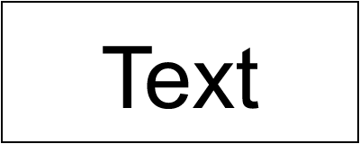
What do you think is the bounding box of this text? Something like this (highlighted with a green rectangle)?
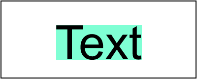
Nope! This is a path bounding box, not text bounding box.
To visualize the actual object's bounding box we can use a filter with relative coordinates, like so:
<filter id="filter1" x="0%" y="0%" width="100%" height="100%">
<feFlood flood-color="aquamarine"/>
</filter>
This filter will fill a region that equals the object's bounding box with an aquamarine color. And after applying it to our text we would get:
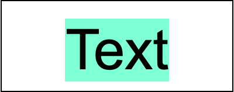
If you're familiar with a modern text layout you're probably not that surprised. But if you're not, here is a cool illustration from Apple's docs:
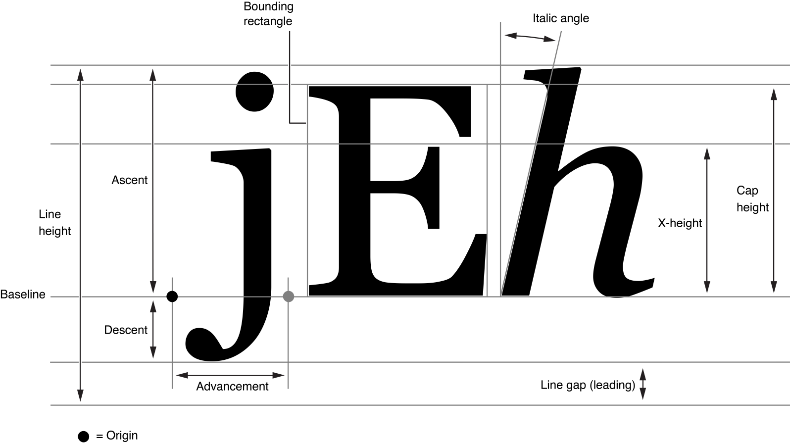
What we're interested in here is line height (the first vertical measure on the left).
Text layout width + line height is our text bounding box.
This is what should be used when objectBoundingBox property is defined.
And while Chrome, Firefox and Safari are all fine, Batik, Inkscape and librsvg will produce an incorrect output.
Leading and trailing spaces
By default, all leading and trailing spaces would be removed from a text element in SVG.
Unless we set xml:space to preserve.
And the spaces we have preserved do affect the bounding box as well.
For an SVG like:
<text x="100" y="60" text-anchor="middle" xml:space="preserve"> Text </text>
We would get:
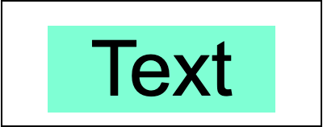
Chrome, Firefox, Safari and Inkscape handle this correctly, but Batik and librsvg don't. What's even stranger is that Inkscape accounts for leading/trailing spaces, but not not line height, which we discussed above.
Zalgo
Previously, I've said that font's line height is our bounding box height. Well, this is only true for simple cases.
In a modern text layout a line doesn't technically have a height. Or rather a height limit. This may sound a bit surprising, but it's true. And a good illustration of this is Zalgo text.
Let's try rendering Te̶̗̯̪̺̋̓̍̾́xt using various SVG libraries:
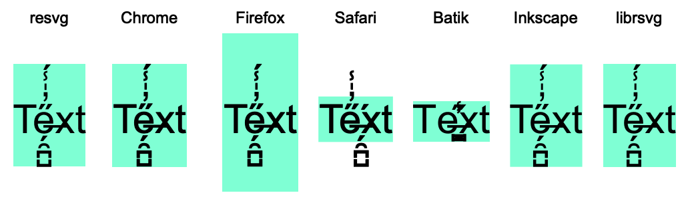
Ugh... Welcome to the hell the SVG Text is.
Language
When a text has characters not present in a specified font family(ies), an SVG library would try to fallback to a random font that contains those characters. This process is called font fallback. It's completely undefined and it's a rabbit hole on its own.
The problem is that a single Unicode character can have different meanings depending on the language. It's not an issue for most languages but can become one for Chinese derivatives (aka CJK).
To force the text language, SVG uses the xml:lang attribute:
<g font-family="sans-serif" font-size="32">
<!-- Default (will usually fallback to Chinese) -->
<text x="100" y="58" text-anchor="middle">刃直海角骨入</text>
<!-- Japanese -->
<text x="100" y="108" text-anchor="middle" xml:lang="ja">刃直海角骨入</text>
<!-- Traditional Chinese -->
<text x="100" y="158" text-anchor="middle" xml:lang="zh-HANT">刃直海角骨入</text>
</g>
Here we define font-family to be essentially anything and we have three
text elements with exactly the same content, but different languages.
Based on my tests, only Chrome, Firefox and librsvg do handle xml:lang
and the expected output should look something like this:
As you can see, while our Unicode strings are identical, they are rendered differently.
On macOS, Chrome would fallback to the following fonts:
- PingFang SC for the "default" language
- Hiragino Kaku Gothic ProN for Japanese
- PingFang TC for Traditional Chinese
And while the actual "style" of a glyph can be different depending on a font, the hieroglyph itself should always be the same.
Note: This chapter was inspired by this article.
letter-spacing
SVG supports the letter-spacing property from CSS. On the surface, it's a pretty simple feature. Just add spacing between letters. How hard can it be?! Well, everything that involves text is hard.
The first issue with letter-spacing is that not all scripts (language categories)
support spacing. The best example is Arabic, aka a cursive script.
CSS even has a good illustration of it.
But the problem is that it seems like no one cares. At least for SVG.
Instead of نص we're getting:
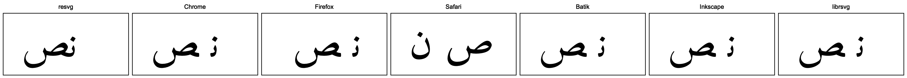
Safari, somehow, even disabled shaping completely.
Another issue is that the CSS spec explicitly states that spacing should be
applied only between letters. So there should be no leading/trailing spaces.
But this one is ignored by browsers as well.
This is how the following SVG would be rendered:
<text x="100" text-anchor="middle" letter-spacing="100" font-size="48">A</text>
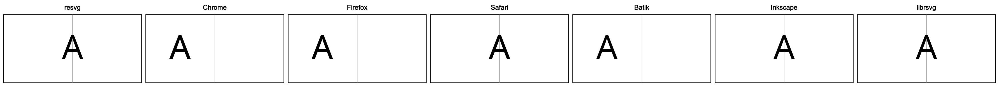
As you can see, Chrome, Firefox and Batik are clearly adding a trailing space. That's why center alignment is broken.
Negative spacing is basically an undefined behavior as well. And while a small negative value should put letters close to each other, a larger one produces random results.
<text x="100" y="100" letter-spacing="-1000" text-anchor="middle">Text</text>
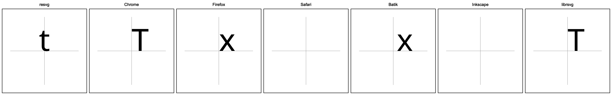
text-decoration
What if I tell you that text-decoration is one of the least supported SVG features?
Yes, the one that is used to underline a text.
How is it even possible?! Let's find out!
The first unintuitive thing you have to understand about text-decoration
is that it's inheritable and uses properties from the element it was defined on.
So in the case of:
<text>
<tspan fill="green" text-decoration="underline">
<tspan fill="black">Text</tspan>
</tspan>
</text>
our underline would be green and not black.
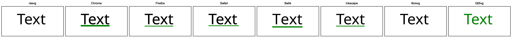
Hm... Ok, let's ignore different width, height, position and everything else for now.
The second unintuitive thing is that decoration properties include font properties as well. So if we have:
<text>
<tspan fill="green" font-family="Arial" font-size="200" text-decoration="underline">
<tspan fill="black" font-family="Noto Sans" font-size="48">Text</tspan>
</tspan>
</text>
then our underline would use Arial font metrics and not Noto Sans one. And yes, underline thickness and position are stored in the font.
In reality though...
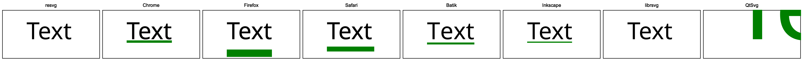
Firefox and Safari are the only one "correct" here.
The third unintuitive thing is that decorations are cumulative.
Meaning we can define multiple text-decoration's separately and they have to be combined.
And yes, preserved their individual styles.
<text x="50" y="60" font-family="Noto Sans" font-size="48">
<tspan fill="green" text-decoration="underline">
<tspan fill="blue" text-decoration="line-through">
<tspan fill="black">Text</tspan>
</tspan>
</tspan>
</text>
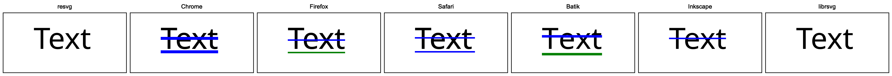
Here, Firefox and Batik are correct. But at this point it's even hard to tell who is right or wrong.
Another problem with such fundamental properties such as text-decoration is that they can affect
many other SVG constructs. Like a vertical text.
<text x="100" y="100" font-family="Amiri" font-size="20" text-anchor="middle"
writing-mode="tb" text-decoration="underline">本 Hi! اليابان</text>
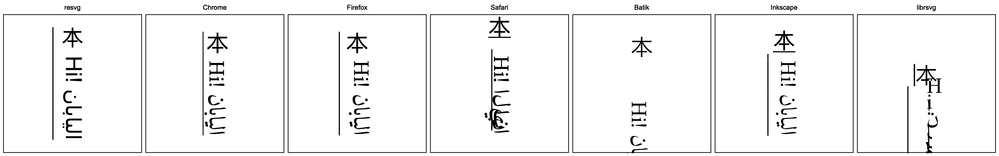
Well, yeah... Safari, for a browser, is comically bad here.
Let's also remember that letters in SVG can be rotated. In which case underline is not longer... well, a line.
<linearGradient id="lg1">
<stop offset="0" stop-color="white"/>
<stop offset="1" stop-color="green"/>
</linearGradient>
<text x="10" y="65" rotate="15" fill="url(#lg1)"
font-family="Noto Sans" font-size="86" text-decoration="underline">Text</text>
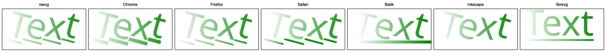
Note that text-decoration would be converted into paths and become a part of
the whole text content. Basically, the text element would become a group
with paths.
As you can see, Safari has an incorrect gradient position on underline. Batik and librsvg are drawn just a line. And Inkscape simply gave up.
Finally, let's ignore all the rules and try to render the most absurd case possible. A vertical text, partially on a circle path, with decoration defined outside the text element.
<g text-decoration="overline" fill="red">
<text writing-mode="tb" fill="black">
<textPath xlink:href="#path1">
非常に長いテキ
</textPath>
スト。
</text>
</g>
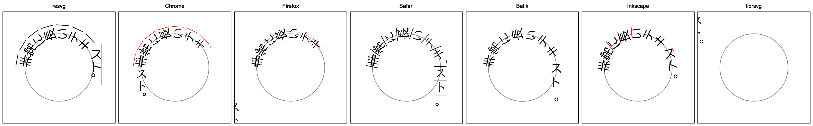
Yeah... This is SVG for you. No one knows what to do.
text-anchor
SVG allows text alignment using the text-anchor property.
It supports three pretty common states:
start (left), middle (center) and end (right).
As always, it might look like a simple property, but it is not.
The first issue is that text-anchor aligns a text chunk and not the whole text
and not a span. You can find more info about it
in the Text chunks chapter.
The second issue is that its behavior somewhat defined only for horizontal, left-to-right layouts. Right-to-left and vertical layouts are completely undefined. How bad can it be? Well, let's start with something simple.
<text x="100" y="60" text-anchor="end">
Start<tspan x="100" y="100" text-anchor="middle">middle</tspan>
<tspan x="100" y="140" text-anchor="start">end</tspan>
</text>
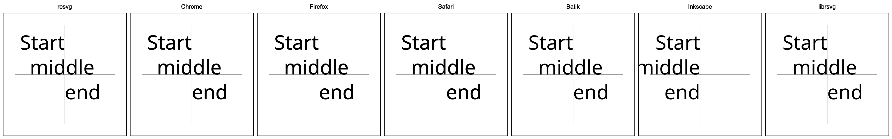
Inkscape already out.
What about Arabic text?
<text>
<tspan x="100" y="60" text-anchor="end">مفتاح</tspan>
<tspan x="100" y="100" text-anchor="middle">معايير</tspan>
<tspan x="100" y="140" text-anchor="start">الويب</tspan>
</text>
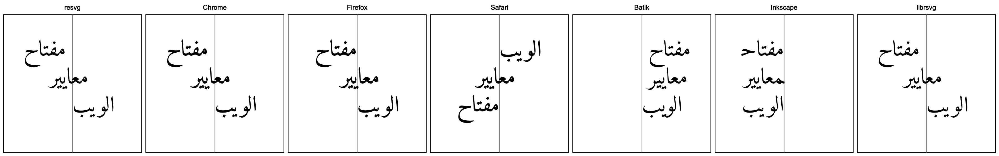
Hm... Not good. Technically, our overlord Chrome is correct here. Firefox is close, but has a slightly incorrect placement. Safari, Batik and Inkscape are completely wrong.
Now let's make our text a bit more complex, but logically the same.
<text x="100" y="60" text-anchor="end">
مفتاح
<tspan x="100" y="100" text-anchor="middle">معايير</tspan>
<tspan x="100" y="140" text-anchor="start">الويب</tspan>
</text>
Now our first chunk doesn't have a dedicated tspan, but logically it's identical to the one above.
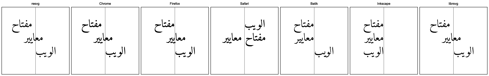
And immediately, our seemingly trivial change lead to a different output.
Somehow, even by removing a new line from the first text node we can change the rendering.
<text x="100" y="60" text-anchor="end">
مفتاح<tspan x="100" y="100" text-anchor="middle">معايير</tspan>
<tspan x="100" y="140" text-anchor="start">الويب</tspan>
</text>
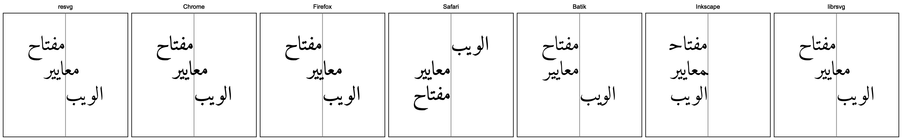
Notice that Safari no longer renders two words one the same line now.
Whitespaces handling in SVG is its own circle of hell, which we discuss in the Whitespaces handling chapter. And it can affect even something seemingly unrelated like RTL text alignment.
At last, what about the vertical layout? Even with an English text.
<text y="100" x="60" writing-mode="tb" font-family="Noto Sans" font-size="32">
Start<tspan y="100" x="100" text-anchor="middle">middle</tspan>
<tspan y="100" x="140" text-anchor="end">end</tspan>
</text>
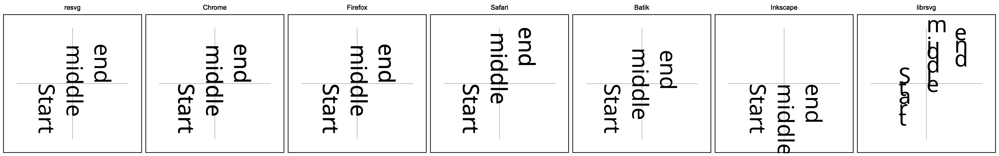
Yeah... As expected.
fill-rule
A typical SVG renderer doesn't actually render text directly to the canvas, like a GUI library would, but rather converts it into paths and then renders them. After all, a text in SVG is basically a fancy way to define paths.
The edge case that arises when treating text as paths are that it must not be affected
by the fill-rule property. It might not affect a typical Latin text, but in complex scripts,
it might lead to bugs like this:
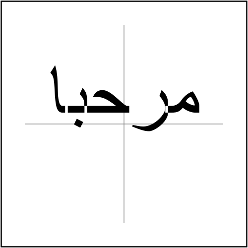
A proper parser must always set text fill-rule to nonzero.
And before you think that no one would make such an obvious mistake, the image above was produced by Inkscape 1.2 (2022).
The use element
The use element provides a nice feature: instead of copying the same
element multiple times, we can define it once and simply reference it when needed.
Meaning that instead of:
<g>
<!-- same elements -->
</g>
<g>
<!-- same elements -->
</g>
<g>
<!-- same elements -->
</g>
we can write
<g id="my-group">
<!-- same elements -->
</g>
<use xlink:href="#my-group"/>
<use xlink:href="#my-group"/>
A cool idea that quickly becomes a nightmare.
The first issue with use is style resolving. Let's say we have:
<g fill="red">
<rect id="my-rect"/>
</g>
<use xlink:href="#my-rect" fill="green"/>
What color the rectangle would have? As you've probably guessed - it's green.
But why? Our rectangle doesn't define a fill attribute, therefore we have to look
for it in parent elements. And my-rect parent is g. So it should be red, no?
No. A referenced element parent is use. Not the actual parent in an XML document.
An SVG library should simply replace each use instance
with a group, copying all non-use attributes into it and
copying the referenced element inside it (ignoring the ID to prevent duplication).
So our example above would become:
<g fill="red">
<rect id="my-rect"/>
</g>
<g fill="green">
<rect/>
</g>
But that's no all. CSS has to be applied to the original tree,
not the one where use was already instanced.
use to symbol
The use element has three separate behaviors
depending on what element it is referencing:
a svg element, a symbol element or any other graphical element.
In this chapter we would focus on the symbol element.
What is symbol?
The SVG 1 definition
of the symbol was hilariously bare-bone. It basically only acknowledges that such
an element exists and that's it. This is probably the reason why it's so poorly supported.
The SVG 2 definition
of the symbol is far better but still doesn't really go into nitty-gritty details.
And more importantly, doesn't explain why we need it in the first place.
In simple terms, symbol is just an invisible, nested svg.
Why does it even exist then? That's a good question and I have no idea.
Unlike nested svg, symbol cannot be rendered directly, even when it is located outside defs.
And it isn't just display:none. symbol and all its content are invisible by design
and can be rendered only via use.
And since symbol is just a nested svg, it also has its own viewport and must be clipped,
which confuses a lot of people.
Let's say we have an SVG like this:
<svg viewBox="0 0 200 200">
<symbol id="symbol1">
<circle cx="0" cy="0" r="80" fill="green"/>
</symbol>
<use xlink:href="#symbol1" transform="translate(100 100)"/>
</svg>
A symbol with a green circle at 0,0 rendered with a 100,100 offset.
You would probably imagine to see a circle in the center of the image.
Wrong!
Wait, why there is only a quarter of the circle visible? Where the rest have gone?
Well, this is symbol for you. Remember that just like a nested svg, symbol must be clipped.
And by default, the clip region is the same as the current viewport, aka our root svg element.
What a rendered would do is that it would create a new canvas with the same size as the parent one.
So 200x200 in our case. Draw symbol's content onto it, clipping everything outside the canvas.
Draw symbol's canvas onto the main canvas using the transform specified on the use element.
Since out circle starts at 0,0 - our symbol canvas would have only the bottom-right quarter of the circle, which then be moved to the center of the main canvas.
In fact, we can losslessly rewrite our SVG above into:
<svg viewBox="0 0 200 200">
<clipPath id="clipPath1">
<rect x="0" y="0" width="200" height="200" fill="black"/>
</clipPath>
<g clip-path="url(#clipPath1)" transform="translate(100 100)">
<circle cx="0" cy="0" r="80" fill="green"/>
</g>
</svg>
Also, since symbol is just a nested svg, it also affected by the
use to svg size resolving logic.
Overall, symbol is quite useless, unintuitive and poorly supported
(Inkscape 1.2 basically ignores it). I would strongly advise against using it.
use to svg size resolving
The use element can reference almost all graphical elements, including svg.
But this case has to be handled differently.
If you read the spec very carefully, you will notice the following line:
If attributes
widthand/orheightare provided on theuseelement, then these values will override the corresponding attributes on thesvgin the generated tree.
This means that in the case of:
<svg id="svg1" width="80" height="80">
<rect/>
</svg>
<use xlink:href="#svg1" width="100" height="150"/>
The width and height properties on the svg1 element must be ignored and replaced
with the one provided by use.
Weird, but not that strange for SVG. The next problem lies in the part not described in the spec. What if we have something like this:
<svg id="svg1" width="80" height="80">
<rect/>
</svg>
<use id="use1" xlink:href="#svg1" height="100"/>
<use id="use2" xlink:href="#use1" width="200"/>
Should we ignore the width from use2? Yes we do!
width and/or height only from the direct "parent" use element must be used.
So our svg1 would be 80x100 and not 200x100.